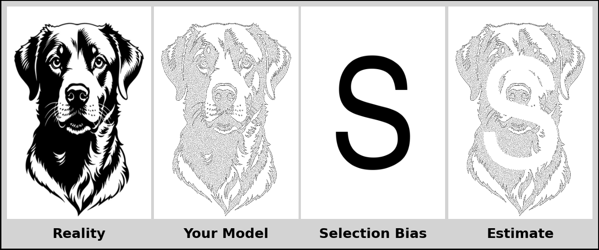

🎨 Selection Bias & Missing Data Demonstration
A Statistics Meme
The Meme
This visualization demonstrates selection bias, a fundamental challenge in statistical inference. Using a four-panel layout, the meme illustrates how systematic patterns of missing data (represented by the letter “S”) can distort our understanding of reality.
When data is missing in a non-random, systematic way, our estimates become biased, offering a skewed perspective rather than the true picture. The meme shows how this can happen in real-world data collection and analysis.
Understanding of Selection Bias
This meme illustrates selection bias by showing how systematic missing data can distort understanding. The “Reality” image is the true population, while the stippled “Your Model” represents biased data collection. Removing data points in a systematic “S” pattern results in biased estimate and no longer represents the true population, just as missing data in real-world studies can lead to incorrect conclusions.
Selection bias skews our results because the chosen sample is not the representative of the whole population. In mathematical terms, this means our biased estimate (θ̂) is systematically different from the true population parameter (θ). The bias is defined as:
Bias(θ̂) = E[θ̂] - θ
The visual representation of selection bias in the meme follows a four-panel structure:
- Reality (Original Image) - Represents the true parameter θ we’re trying to estimate.
- Your Model (Stippled Image) - Shows our sampling mechanism—which observations we collect.
- Selection Bias (Block Letter “S” Mask) - The systematic filter that determines which data points are observed.
- Estimate (Masked Stippled Image) - Our estimate θ̂ based only on the selected data.
The reality panel represents the true population distribution. It serves as the unobservable parameter of interest in statistical inference.
The Your Model panel represents the observed sample data. Each stipple point corresponds to a sampled observation from the population.
The Selection Bias Panel represents a systematic missing data mechanism. This mechanism opoerates according to a non-random pattern. It creates a dependency between the probability of observation and unobserved characteristics.
The Estimate panel reveals a resulting biased estimator. This bias arises because, under a Missing Not At Random (MNAR) mechanism, the observed data form a non-representative subsample of the population. This non-representative sampling causes the empirical distribution to systematically deviate from the true population distribution.
Informative missingness introduces bias into parameter estimates and undermines the validity of subsequent statistical inference. A key principle in missing data theory dictates that when the missing data mechanism (MNAR, or missing not at random) depends on unobserved values, standard methods assuming missing at random (MAR) or missing completely at random (MCAR) yield biased and inconsistent results.
Conclusion
Selection bias is a significant issue in statistical analysis because it produces a systematic error that can lead to invalid or inaccurate conclusions if not properly managed. This bias occurs when the study sample does not accurately represent the target population, distorting the true association between exposure and outcomes.
In real-world applications, this challenge is illustrated by scenarios such as:
- Survey non-response: When response rates vary systematically by demographic characteristics, meaning certain groups are underrepresented in the final dataset.
- Clinical trials loss to follow-up: When participants drop out of a study because of factors related to the treatment’s effects (e.g., severe side effects), potentially skewing the results about the treatment’s efficacy and safety.
- Observational studies sampling issues: When both the exposure and outcome influence an individual’s likelihood of being selected for the study sample, creating a spurious association (or obscuring a real one).